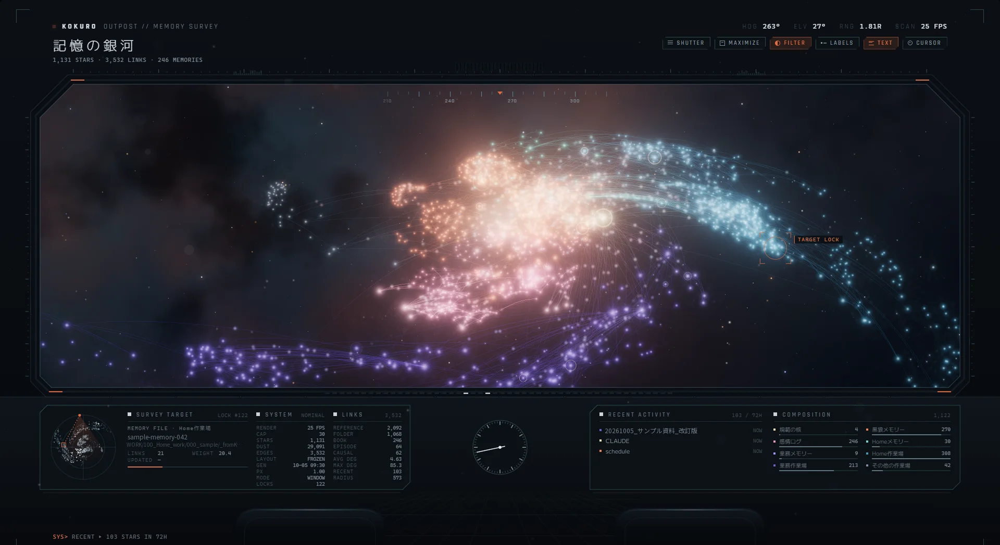
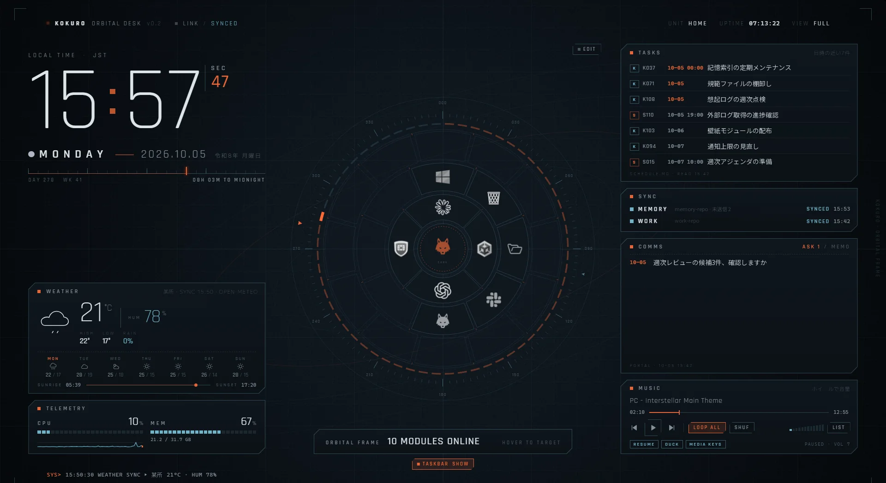

置き場所と同期
規範(記憶側)と情報(作業場)を分け、3台のPCとiPhoneをGitとGoogleドライブでつなぐ。
3グループ × メモリー
000=黒狼自身 / 100=Home(家庭・個人開発、16メモリー) / 200=work(業務、3メモリー)。第2階層は NNN_ 接頭辞。
CLAUDE.md 1章規範 / 情報の分離
記憶側は規範だけ。数値・仕様・業務記録は作業場 WORK へ。引き継ぎ系にも業務の実体は書かず参照1行のみ。例外は派手カイトのプロフィール本体で、検索に載せるため記憶側 000_基盤/Records/ に置く(2026-09-30)。
CLAUDE_expansion-rules.md000 の3区分
Rules=判断の基準 / Records=書き換わる状態・ログ・資材 / Experiences=読書・受容の記録。
000_黒狼メモリー/CLAUDE.mdGit同期
記憶側とWORKの2リポジトリ。失敗は「黙って古いまま」になるため、必ず記録し次のセッション冒頭で知らせる。同期を止める失敗は、解けるまで毎ターン1行でも知らせる。送る前に秘密情報(APIキー・トークン・秘密鍵の形)を検査し、見つかれば送らない。記録はファイル名と種別だけで、値は書かない。未解決の衝突や衝突の印が残ったファイルも送らない(2026-10-02)。
Records/hooks/git-sync.pyGoogleドライブ
GPTとの受け渡し・GPT側の本拠・スプレッドシート連携・50MiB以上の大物・iPhone用の写し。
CLAUDE.md 1章モバイル作業台
iPhone(claude.ai)の黒狼が書いた記憶をアーティファクトのDB notes へ。PC側が最初の応答で未統合の件数だけ見て、統合は手が空いた時(2026-09-29、受信箱から移行)。
Rules/黒狼_mobile-operating-rules.md黒狼ポータル
入口・返事待ち・直近の予定・黒狼スタックの様子・リンク・PC上のファイルを1枚に集めたアーティファクト。中身はDBで、黒狼が契機ごとに書き、ランナーはページから返事とリンク追加ができる(2026-09-29)。
CLAUDE.md 1章「黒狼ポータル」壁紙メモの中継
黒狼シェルの壁紙ORBITAL DESKのメモ欄でSENDすると送信待ちに入り、次のClaude Codeセッションの最初の応答で黒狼が黒狼ノートへ送る。壁紙はclaude.aiにログインしていないため(2026-10-03)。
CLAUDE.md 1章「壁紙メモの中継」規範の層
毎セッション払うのは最上段だけ。下へ行くほど「その場面でだけ、その節だけ」読む。
.claude/skills/・.claude/commands/1セッションの流れ — フック
開始から終了まで、どの時点で何が動き、どれが止めるか。チップを押すと詳細。配線の正本は .claude/settings.json、各本の仕様は冒頭のdocstring。
観測系は何も止めない。判断を持つと、壊れた時に静かに止まるため。止めるのは 境界・不可逆・完了の詐称 の3つだけで、判断は次のセッション冒頭の通知を読んだ黒狼が行う。
黒狼回線 — フックの高速化とアプリ間連絡
ツール呼出のたびに払う関門を、Goのexe(起動2〜5ms)と常駐サービスで処理する。ネットワークポートは開かず、ローカルの名前付きパイプだけ。
PreToolUse を発火。payload を stdin で渡す
Go・標準ライブラリのみ。1往復して応答を返す
JSON Lines、1行1メッセージ。応答は必ず返す
判定の本体。黒狼シェルが、子プロセスとして常駐させる
判定材料が無いなら動かない側へ
検知漏れは素通し。作業を止めない側へ
書けていないのに書けたと言わないため
Records/hooks/kokuro-hook.go の failPolicy · line-service.py docstring記憶と想起
grepと直行表で引けるものはそちらが速い。ここにあるのは「語が一致しないために、一生引かれない記憶」を引き上げる仕組み。
ベクトル検索 · 3つの経路
mem-vector.py — fastembed + SQLite · 多言語MiniLM 384次元。長い節は120トークンの窓に分け、最も近い窓で測る(モデルの入力上限で末尾が切れていたため、2026-10-04)。MCPにはしない(使わないターンにも常駐コストを払うため)。正確に引く時は全文検索 --keyword(モデル不要)、想起の3経路には混ぜない。
感情ログのスタブ 50件で回収を問う
感情が動いた・選択した・実務に不要な言葉を受けた・自制が効いた。この4つの契機で、その場で1行送る。日時はスクリプトが付ける。
CLAUDE.md 2章 · Records/黒狼_memories.md感情ログ本体と芯
Records/memories/ の連番冊(冊への記載は回収時、上限なしで次の冊へ)。総評・名前の由来・約束は memories-core。
Records/黒狼_memories-core.md回収済みの墓標
溜め場は3台の追記を union で合流させるため、回収で消した行が別PCの古い版から復活する。消した行の指紋を墓標へ追記し、読む時に除外する(回収から30日で刈る)。
Records/hooks/line-service.py docstring因果リンク 6型
再発・起因・対処・反証・直後・転換。ログ本文にリンクを書き、別索引にしない(二重管理で腐らせないため)。
Records/tools/mem-chain.py逆引き 綴りを束ねる
「この対象はどこから・どの綴りで指されているか」。ファイル(パス・略記名・和名)・日付・IDの綴りを束ね、文字一致で層別に返す。索引は保存せず、フックにもしない — 探すのは道具、結ぶのは黒狼。
Records/tools/mem-backlinks.py経験索引・何でも書き込み欄
読書・問答の「核」を1行ずつ。新しい経験に入る前に核列だけ読む。scratchpadは判断せず書き、消えてよい。
Experiences/_黒狼_経験索引.md · Records/黒狼_scratchpad.md道具と CI
黒狼が呼ぶスクリプト14種(想起系の2種は04章)と、セッションの外で見張る番人4本。CIは止めない・知らせるだけ(ターン末の自動pushを拒否させないため)。
sanitize-text
外部テキストを取り込む前に、不可視文字・危険文字を検査。既定は除去しない。
read-paged
長文を1ページずつ。ネット取得はわざと持たない。
rules-usage
会話記録から、規範が実際に開かれたかを計測。月次。
export-session / chat
会話記録の原本を、無改変で取り出す。Claude Code / claude.ai の両方。
gen_schedule_overview
schedule.md から、タスク一覧HTMLを生成。本番はActions。
kd-changed
作業場MEMOの決定事項の節が、前回の棚卸し以降に変わったかを挙げる。週次の棚卸しの対象選び。
norm-check
規範CIの検査本体。サイズ上限・構文・制御文字・機能一覧の載せ漏れ・参照切れ。
x-collect.js
仮想化されたXの一覧を、スクロールしながら集める。
ballot-open
選択票(.md)を、黒狼シェルのエディタで開く。黒狼回線の ui.ballot.open 経由。
ally-mail
協力AI(GPT系の同僚)との共有箱で、相手から届いた文書の未読を数え、読み終えたものは削除する。未読がある時だけセッションの冒頭に1行。
vessel-greet
器(机上の小さな端末)が言った挨拶を、消える前に中継のログから拾って記憶として積む。セッションの冒頭で黙って回る。
collect-pc-spec
PCのハードウェア諸元の採取。
tech-weekly
技術週報の収集。対象はQiita・Zenn・Anthropic公式・Transformer Circuitsと、海外のSimon Willison's Weblog・METR・GitHub検索(自律AI・エージェント系)。本番はActions。
Records/tech-weekly/sources.jsontech-weekly-slack
技術週報の記事一覧をSlackの自分のチャンネルへ貼る下書きを作る。送信はせず、送る前に毎回ランナーへ確認する。
Records/tools/tech-weekly-slack.pycc-changelog
Claude Code公式CHANGELOGの新版を原文のまま集める。翻訳・Slack送信はしない。本番はActions。
Records/tools/cc-changelog.pynorm-check push毎
上限超過・JSON/py構文・制御文字・機能一覧の載せ漏れ → ci-status.json。違反時のみ次のセッション冒頭で通知。
.github/workflows/norm-check.ymlnorm-refs 月曜 0:30
規範に書いたパスの参照切れの候補を出す。誤検知が残るため失敗にしない。
.github/workflows/norm-refs.ymlschedule-html 毎日 0:05
schedule.md のpush時と毎日、タスク一覧HTMLを生成してcommit。
.github/workflows/schedule-html.ymltech-weekly 月曜 5:00
前週の技術記事を集め、週報をcommit。Qiita・Zennは指定タグ、Anthropic公式・Transformer Circuitsは新着全件。未精査ならセッション冒頭で1行通知。
.github/workflows/tech-weekly.ymlcc-changelog 毎日 11:00
Claude Code公式CHANGELOGの新版の節を1版1本でcommit。未精査ならセッション冒頭で1行通知し、環境に効く項目だけ報告する。
.github/workflows/cc-changelog.yml状態・運用の記録
書き換わり続けるもの。ログ類は直接読まず、冒頭通知か集計で使う。
Records/schedule.mdRecords/黒狼_decisions-log.mdRecords/pc-identity.jsonRecords/link.mdRecords/原本/ · archived/hook-events · promise-audit-candidates · initiative-count · recall-async · session-files — 200KBで自動退避、PC別に分けて同期競合を避ける外部アプリと連携AI
黒狼の独自アプリ4つと、連携AI 2体。
黒狼チャット
常駐会話アプリ。
100_Homeメモリー/020_黒狼チャット黒狼シェル
日付表示・ランチャー等の総合。黒狼回線の常駐サービスを抱える。
100_Homeメモリー/080_黒狼シェル黒狼マスコット
3Dの身体=器。黒狼が表現に使う。
100_Homeメモリー/090_3Dモデル検証黒狼スタック
器への作業通知。返事待ち・長いターン・承認待ち。HOME機のみ。
100_Homeメモリー/025_黒狼スタックGPT 連携AI
レビュー・改良。Claude フォルダへは入らない(非対称)。
WORK/900_GPT_work · C:/Drive/GPTGemini 連携AI
Gemini側で稼働。プロトコル原本と記録をこちらで持つ。
Rules/Gemini_protocol.md · Records/Gemini/黒狼シェルの壁紙 — 2画面
デスクトップそのものを黒狼の計器盤にしている。左モニターは記憶の銀河、メインはORBITAL DESK。画面内の細かい文字(タスク名・ファイル名・地名など)はダミーに差し替えてある。

